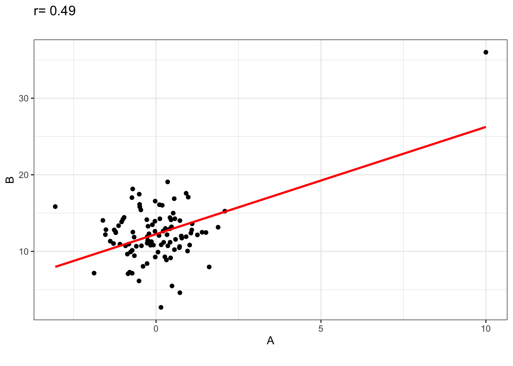

3 Korelacja i asocjacja
“Celem analizy korelacji jest stwierdzenie, czy między badanymi zmiennymi zachodzą jakieś zależności,jaka jest ich siła, jaka jest ich postać i kierunek” (Nowak-Brzezińska)
3.1 Współczynnik korelacji liniowej Pearsona (\(r_{xy}\))
W naukach atmosferycznych współczynnik korelacji Pearsona jest jedną z najczęściej stosowanych miar współzależności dwóch mierzalnych cech. Należy pamiętać, że korelacja to jeszcze nie zależność, a prawidłowe wyznaczenia wartości współczynnika korelacji obarczone jest szeregiem założeń metodycznych.
Współczynnik korelacji liniowej Pearsona \((r_xy)\) jest miarą powiązania pomiędzy dwiema lub większą liczbą zmiennych i wyznaczamy go za pomocą równania:
\[ r_{xy} = \frac{\sum_{i=1}^n (x_i - \overline{x})(y_i - \overline{y})}{\sqrt{\sum_{i=1}^n (x_i - \overline{x})^2} \sqrt{\sum_{i=1}^n (y_i - \overline{y})^2}} \] gdzie:
- \(x_i\) i \(y_i\) – oznaczają odpowiednio wartości zmiennych \(x\) i \(y\)
- \(\overline{x}\), \(\overline{y}\) – średnie wartości tych zmiennych
Współczynniki korelacji przyjmują wartości z przedziału od -1 do +1, gdzie poszczególne wartości oznaczają:
- -1,00 – doskonałą korelację ujemną
- +1,00 – doskonałą korelacją dodatnią
- 0,00 – brak korelacji
W rozbiciu na przedziały wartości (bezwzględnych) można siłę związków opisać słownie:
- poniżej 0,2 – brak związku liniowego pomiędzy badanymi cechami,
- 0,2 - 0,4 – zależność liniowa wyraźna, lecz niska,
- 0,4 - 0,7 – zależność liniowa umiarkowana,
- 0,7 – 0,9 – zależność liniowa znacząca,
- powyżej 0,9 – zależność liniowa bardzo silna
W przypadku zaobserwowania korelacji dwóch zmiennych (x i y) możliwe są następujące sytuacje:
- x wpływa na (powoduje) y
- x wpływa na y
- z wpływa na x i y
- x wpływa na y i y wpływa na x
- x wpływa na z; z wpływa na y
- nie istnieje relacja przyczynowo-skutkowa pomiędzy zmienną x i y (korelacja jest przypadkowa)
Najczęściej zależność pomiędzy zmiennymi najlepiej przedstawić na wykresach punktowych (zwanych także diagramami korelacyjnymi). Zdarza się bowiem, że po obliczeniu współczynnika korelacji zbliżonego do 0,00 może istnieć zależność pomiędzy analizowanymi parametrami, jednak może mieć ona charakter nieliniowy.
Wykresy korelacyjne [(c) Kubiczek 2016]
Tak jak wspomniano - relatywnie wysokie wartości współczynnika korelacji same w sobie nie muszą oznaczać wysokiej siły oddziaływania związków przyczynowo-skutkowych. (“correlation does not mean causation”). Warto sprawdzić np. http://www.tylervigen.com/spurious-correlations aby przekonać się o możliwych paradoksach, do których może prowadzić spłycona analiza korelacji.
3.2 Trening - zgadnij wartość korelacji
3.3 Współczynnik determinacji \(r^2\)
Współczynniki determinacji (\(r^2\)) będący kwadratem współczynnika korelacji informuje o ilości wyjaśnianej wariancji (zmienności) zmiennej wyjaśnianej (\(y\)) przez zmienną niezależną (\(x\)). Przykładowo, jeśli współczynnik korelacji \(r\) wynosi 0.8, to 64% zmienności analizowanego zjawiska wyjaśnia badana zmienna.
Warto wspomnieć, że “brakującą” część wyjaśnianej wariancji nazywa się współczynnikiem indeterminacji. W powyższym przykładzie było by to 36%, których nie wyjaśnia zmienna \(x\), lub inaczej mówiąc wpływ na 36% zmienności danego zjawiska mają inne czynniki niż te które są reprezentowane przez zmienną niezależną.
3.4 Współczynnik korelacji rang Spearman’a \(r_s\)
Dla elementów nieciągłych lub dla danych nie mających postaci liczbowej siłę związków można wyrazić współczynnikiem korelacji rang Spearmana (\(r_s\)).
Współczynnik korelacji Spearmana ma zastosowanie w przypadkach gdzie dane mogą zostać uszeregowane według utworzonych lub istniejących rang (np. mały < średni < duży lub 1-50 < 51-100 < 101-150).
W przypadku badań atmosferycznych współczynnik korelacji rang Spearmana stosuje się najczęściej do analizy opadów atmosferycznych (możliwe braki opadów) lub innych zjawisk o charakterze nieciągłym.
Jeśli wszystkie rangi \(n\) są oznaczone w postaci liczb całkowitych współczynnik korelacji Spearmana można obliczyć według poniższej formuły (gdzie \(d_i\) to różnica pomiędzy rangami w próbie):
\[ r_{s}=1-{\frac {6\sum d_{i}^{2}}{n(n^{2}-1)}} \]
3.5 Obliczenia współczynnika korelacji w R
Wyznaczanie współczynnika korelacji w środowisku obliczeniowym R można skrócić do kilku kroków:
- Wczyt danych
- Wykres rozrzutu/wykres rozproszenia (np. za pomocą funkcji
plot()) – musimy stwierdzić czy badany związek rzeczywiście najlepiej opisuje zależność liniowa
- Obliczenie korelacji za pomocą funkcji
cor(). Domyślnie jest obliczany współczynnik korelacji Pearsona (argumentmethod = "pearson"). Można także zmienić na korelację Spearmana (argumentmethod = "spearman") i Tau-Kendalla (argumentmethod = "kendall"). Przydatny może okazać się także argumentuse = "pairwise.complete.obs"jeśli w którymś ze zbiorów danych mamy obserwacje brakujące.
Finalnie przykładowy kod można zapisać jako: cor(zmienna1, zmienna2, method = "pearson", use = "pairwise.complete.obs"). W analogiczny sposób można wyliczyć korelację dla macierzy lub ramki danych.
- Obliczenie istotności statystycznej - jeśli chcemy poznań stopien istotności statystycznej korelacji pomiędzy badanymi zmiennymi musimy użyć dodatkowo funkcji do testowania korelacji
cor.test()(argumenty analogiczne jak w pkt. 3)
W przypadku liczenia istotności statystycznej korelacji testujemy hipotezę zerową (\(H_0\)) o tym że wartość korelacji wynosi 0. Najczęściej jako wartośc graniczną przyjmujemy \(p=0.05\). Jeśli \(p<0.05\) wówczas odrzucamy hipotezę zerową i przyjmujemy, że faktycznie uzyskana zależność nie jest dziełem przypadku. Szczegółowo procedura wyznaczania istotności statystycznej i jej znaczenie jest opisane pod koniec niniejszego rozdziału.
3.6 NAO a temperatura powietrza i opady atmosferyczne w Polsce
Na stronie https://www.cpc.ncep.noaa.gov/products/precip/CWlink/pna/norm.nao.monthly.b5001.current.ascii.table umieszczono miesięczne wartości indeksu Oscylacji Północnoatlantyckiej wg Hurrela. Porównajmy wpływ cyrkulacji nad Północnym Atlantykiem z wartościami (a) miesięcznymi temperaturami powietrza w Poznaniu (b) miesięcznymi sumami opadów atmosferycznych
3.6.1 Dane
Dostępne są na stronie: http://enwo.pl/student/nao_korelacje.RData
- nao - miesięcze wartości indeksu NAO
- t2m - średnia miesięczna temperatura powietrza w Poznaniu
- rr - sumy miesięczne opadów w Poznaniu
- rr10 - liczba dni z opadem > 10 mm
- rr20 - liczba dni z opadem > 10 mm
3.6.2 Zadanie 1
Przeprowadź pełną procedurę obliczenia współczynnika korelacji Pearsona dla temperatury powietrza i oscylacji NAO w I, IV, VII i X. Kiedy siła związków jest największa? Czy wszystkie zdiagnozowane relacje są istotne statystycznie?
Przeprowadź analogiczne postępowanie dla współczynników Pearsona i Spearmana w odniesieniu do sum opadów atmosferycznych (zamiast temperatury powietrza). Który ze współczynników osiąga wyższe wartości?
Oblicz macierz korelacji pomiędzy NAO i temperaturą powietrza. Pamiętaj o usunięciu kolumny dla roku. Następnie sprawdź czy istnieją prawidłowości dotyczące przesunięcia czasowego korelacji pomiędzy analizowanymi procesami? Przydatne może być wykorzystanie funkcji
corrplot()z pakietu o tej samej nazwie w różnej wersji zadeklarowanych argumentów:
## corrplot 0.84 loaded3.6.3 Zadanie 2
- Na podstawie danych dostępnych w zbiorze http://www.enwo.pl/student/am8d.rda oblicz w jakim stopniu temperatura powietrza i prędkość wiatru w styczniu i w lipcu są związane ze średnim zapyleniem pyłem PM10. Ile procent współczynnika indeterminacji jest związane z innymi czynnikami meteorologicznymi lub działalnością człowieka?
3.7 Warto pamiętać - Założenia analizy korelacji
Wymagania odnośnie zmiennych powodują dużą ograniczoność/aplikacyjność jego stosowalność w naukach o Ziemi jest często ograniczona. Wymagania te odnosza się zarówno do rozkładu obu analizowanych zmiennych (powinien to być rozkład Gauss’a), jak równiez do “kształtu” relacji (liniowa).
Kolejnym wymogiem jest brak obserwacji odstających, które moga w znacznym stopniu wypaczyć wynik. Przykładowo rozważmy dwie zmienne (A, B), obie o rozkładzie normalnym z korelacja bliską 0.
## `geom_smooth()` using formula 'y ~ x'A teraz dodajmy POJEDYNCZĄ obserwację odstającą i powtórzmy całą procedurę
## `geom_smooth()` using formula 'y ~ x'
Ze względu na fakt, ze współczynnik korelacji liniowej Pearsona to w zasadzie standaryzowana kowariancja, obecność obserwacji odstających skutkuje znacznym błędem estymacji parametru.
Istotność statystyczna
Wyobraźmy sobie, że wyjątkowo dysponujemy wglądem w populację generalną o liczebności 100 000. Zmienne, ktore nas interesują mają rozkład normalny i zostały wygenerowane losowo, tak więc wartość współczynnika korelacji liniowej Pearson’a wynosi 0, lub jest tej wartości bliska. Wykres rozrzutu moze wygladać nastepująco:
Zauważyć można znaczny overplotting, który utrudnia dostrzeżenie struktury/typu współzmiennośći, dlatego przy tak licznej próbie warto rozważyć inne metody prezentacji np. hexbiny:
Tutaj juz wyraźnie widać brak współzmienności.
A teraz stańmy twarzą w twarz z sytuacją z jaką mamy zazwyczaj do czynienia, bo tak się niestety składa, że w Naukach o Ziemi najczęściej dysponujemy pojedynczą próbą o stosunkowo niewielkiej liczebności. Na przykład załóżmy, że nasza próba ma 50 elementów. Wylosujmy 500 takich prób i zobaczmy jak będzie wyglądał rozkład wartości współczynników korelacji Pearsona.
Jak widać zakres zmienności jest dosyć znaczny z wartościami minimalną i maksymalną wynoszącymi odpowiednio:-0.39, 0.43. Tak więc analizując populację generalną ze współczynnikiem korelacji między zmiennymi wynoszącym 0, możemy poprzez procedurę próbkowania otrzymać wartości korelacji zbliżone do +/-0.4.
Analizując dostępne nam dane (pamiętajmy że mamy tylko jedną próbę, ergo nie jesteśmy w stanie określić ile wynosi prawdziwa wartości współczynnika korelacji - nie mamy przeciez wglądu w populację generalną) możemy jedynie przyjąc na wiarę, że nasz estymator współczynnika korelacji w poprawny sposób opisuje nam jego faktyczną wartość.
Zaraz, zaraz… czy aby na pewno pozostaje nam tylko wiara?
Na szczęście nie. Statystyka matematyczna, nazywana również wnioskowaniem statystycznym pozwala na ocenę otrzymanego przez nas współczynnika korelacji pod kątem tego, czy pochodzi z populacji generalnej o współczynniku korelacji wynoszącym zero.
Procedura
- Zakładamy hipotezę zerową (\(H_0\)) o tym że wartość \(r\) wynosi zero.
- Określamy również hipotezę alternatywną (\(H_1\)) w naszym wypadku głoszącą, ze wartość \(r\neq 0\)
- Kolejnym krokiem jest określenie statystyki testowej (w tym wypadku \(t\)) o znanym rozkładzie zerowym (czyli takim, kiedy \(H_0\) jest prawdziwa)
- Obliczamy wartość statystyki testowej dla obliczonej przez nas wartości \(r\).
- Porównujemy ją z wartością krytyczną \(t_\alpha\), będącą kwantylem rokładu zerowego o określonym prawdopodobieństwie przekroczenia.
- Podejmujemy decyzję, czy mamy podstawy do odrzucenia \(H_0\) (jeżeli \(|t| > t_\alpha\)) i stwierdzenia, że korelacja na określonym poziomie (zazwyczaj 0.05 - nazywanym błędem I-go rodzaju) jest istotna statystycznie.
W praktyce jest to dosyć łatwe.
- Obliczamy wartość statystyki testowej. Czyli np. jeżeli w naszym przypadku (dla n = 50) \(r=0,45\) to wartość \(t\) obliczamy z następującego wzoru: \[ t = \frac{r}{\sqrt{1-r^2}}\sqrt{n-2} \]
i wynosi ona 3.4911442
- Nasza statystyka testowa na rozkład zerowy t-Studenta o \(n-2\) stopniach swobody czyli wyglądający mniej więcej tak:
Jest on zadziwiająco zgodny z histogramem wartości \(t\) obliczonych na podstawie 500 współczynników korelacji z 50 elementowych prób, które wcześniej wylosowaliśmy. Spójrzmy…

Nasza wartość wynosząca 3.4911442 jest położona daleko w ogonie rozkładu zerowego statystyki testowej a więc jest mało prawdopodobne, że natkniemy się na nią jeżeli \(H_0\) będzie prawdziwe. Można obliczyć to prawdopodobieństwo, ale zazwyczaj ograniczamy się do stwierdzenia, czy jest ono mniejsze od pewnej arbitralnie przyjętej wartości (najczęściej 0,05).
Aby to stwierdzić musimy obliczyc wartość krytyczna kwantyla \(t_\alpha\) o prawdopodobieństwie przekroczenia 0.025. Dlaczego nie 0.05? Cóż, jeżeli nasza hipoteza alternatywna jest skonstruowana następująco: \(H_1: r\neq 0\) to musimy zastosowac test dwustronny a więc “odciąć” po 0.025 pola powierzchni pod funkcją gęstości prawdopodobieństwa po obu stronach rozkładu. Wówczas wartość krytyczna kwantyla wynosi: 2.0106348.
Jak widać spełniona jest nierówność \(|t| > t_\alpha\) tak więc jesteśmy upoważnieni do odrzucenia \(H_0\) na rzecz hipotezy alternatywnej \(H_1\), a nasza korelacja jest istotna statystycznie na poziomie istotności 0.05.
3.7.1 zalecane materiały uzupełniające:
Sobczyk M., 2003. Statystyka, strony 220–245